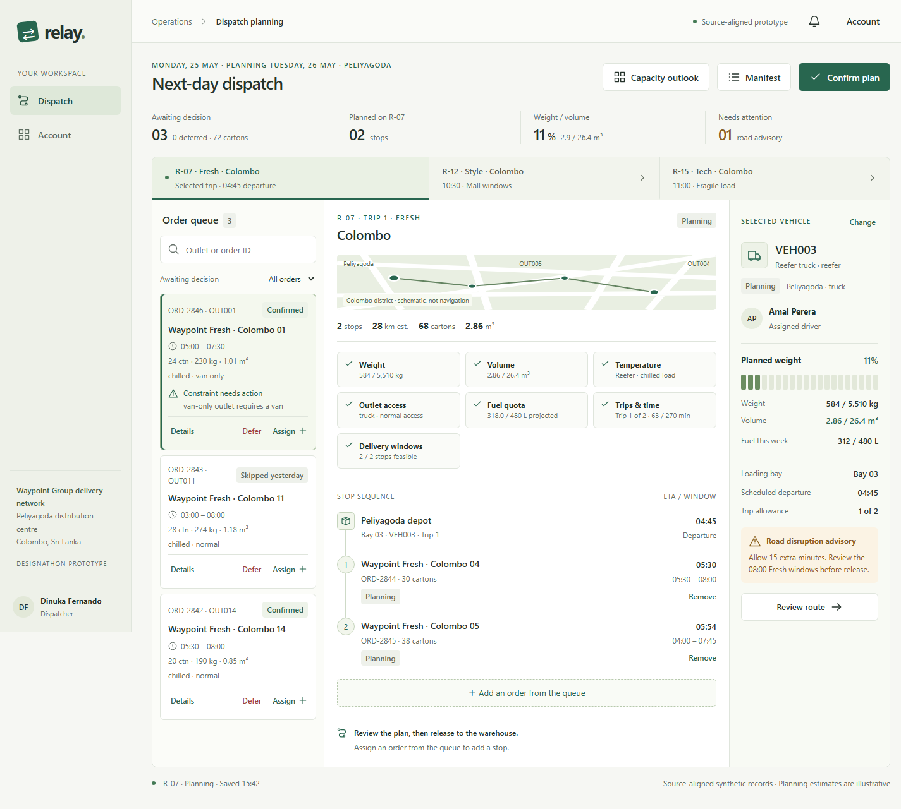

Waypoint Fresh
Fresh stores need deliveries before opening, and chilled or frozen goods require refrigerated vehicles. Some outlets are van-only.
Connected delivery operations for Waypoint Group
Waypoint Group's three brands use one delivery network, but they place different demands on it.
Fresh stores need deliveries before opening, and chilled or frozen goods require refrigerated vehicles. Some outlets are van-only.
Garment loads often reach their volume limit before their weight limit. Mall stores also have fixed access windows.
Appliances and electronics are heavy, fragile, and valuable. Daily demand can vary.
Dispatchers currently plan with spreadsheets and operational knowledge. Instructions move through calls, dock conversations, printed run sheets, and handwritten notes. This makes several handoffs difficult to keep current:
Relay connects ordering, planning, loading, delivery, and receipt so each role can act on the previous role's work.
Choose full-carton replenishment, submit before the 16:00 cutoff, track the planned arrival, inspect driver POD, confirm receipt, and report an issue.
Work from one confirmed queue, assign a route and vehicle, validate constraints, record deferrals, monitor delivery, and review receipt follow-up.
Use the released stop sequence, load the final stop first, check cartons and products, and resolve short or damaged shipments before departure.
See one next stop on a phone, record arrival, report exceptions, return to deferred stops, and capture carton verification, recipient, and delivery time.
The implemented walkthrough follows one complete Waypoint Fresh trip, R-07 in Colombo, from Peliyagoda across all four roles. Style and Tech appear as scheduled previews. This keeps the critical handoffs testable without claiming that every route is editable.
| Constraint | Why it matters | How Relay surfaces it |
|---|---|---|
| Weight | Every vehicle has a payload limit. | Planned kilograms are shown against vehicle capacity. Overweight assignments are blocked. |
| Volume | A load must fit by volume as well as weight. | Planned cubic meters are shown beside the vehicle's volume capacity. |
| Refrigeration | Chilled and frozen goods require a refrigerated vehicle. | Order temperature and vehicle capability appear in the queue, fleet choice, and validation checks. |
| Van-only access | Some outlets cannot be served by trucks. | The outlet access condition stays visible, and an incompatible assignment explains why it is blocked. |
| Depot | Orders and vehicles must align with the serving depot. | The route, order, and selected vehicle identify Peliyagoda and validate depot compatibility. |
| Fuel quota | Route distance consumes the vehicle's weekly allowance. | Estimated route distance, vehicle fuel use, and weekly quota appear in planning checks. |
| Trips and time | A vehicle may run up to two routes per day, and the Fresh run has a practical time budget. | Trip 1 of 2 and route minutes are visible before release. |
| Delivery windows | Fresh stores must receive before opening, while mall access is fixed. | Projected arrival is checked against each order window and at-risk stops are identified. |
Next-day orders close at 16:00. The Store workspace shows the cutoff, and the Dispatch workspace identifies the operating day and next-day plan.

The screenshot is captured from the running Relay prototype at a desktop viewport. The route map is schematic and is not used for navigation.
Reason: The dispatcher holds operating knowledge and remains accountable for tradeoffs.
Prototype: Seven validation groups appear beside the stop sequence and vehicle.
Reason: An unserved outlet needs a recorded reason and next action, especially after a previous skip.
Prototype: The deferral requires both a reason and impact note, then becomes visible to Store.
Reason: Coverage can drop away from the depot, but a driver or loader still needs to record work.
Prototype: Safe actions persist locally, pending updates remain visible, and recovery clears the simulated queue.
Reason: The first delivery needs to be nearest the vehicle door.
Prototype: The manifest starts with the final route stop and blocks out-of-sequence confirmation.
Reason: Separate role dashboards would repeat the same fragmented handoff.
Prototype: Order status, route, loading progress, delivery, and receipt use one shared browser record.
Reason: Delivery disputes should not depend on memory or an incomplete note.
Prototype: Full carton count, verification, recipient, and time are required before delivery completes.
Reason: Demand planning needs a discussion about vehicles, drivers, and refrigerated capacity.
Prototype: A clearly labeled illustrative 10-week view demonstrates that decision without claiming real forecasting.
Relay has no backend, database, real account provisioning, production authorization, live cross-device synchronization, service worker, route optimizer, submitted forecasting model, or production infrastructure.
R-07 Fresh is the one editable end-to-end trip. R-12 Style and R-15 Tech are scope previews. Partial deliveries remain outstanding for reconciliation, and a driver POD does not update Store stock until the Store manager confirms receipt.
Requirements extraction, gap analysis, source-alignment suggestions, front-end code revision, test expansion, copy refinement, and beginner documentation were assisted by OpenAI Codex during the final review.
The original Relay concept, visual direction, interaction model, and submitted workspace were provided by the team. Final competition claims, design judgment, prototype demonstration, and submission decisions remain the team's responsibility.
Official booklet requirements and supplied CSV schemas were checked directly. Automated browser tests exercise the connected workflow, exceptions, offline recovery, accessibility behaviors, and responsive layouts.
Relay keeps the dispatcher in control and makes feasibility checks visible. The system blocks an infeasible choice, but it does not pretend to know the only correct allocation.
Operational judgment, accountability for deferrals, and a plan that can be explained to Stores and field teams.
The prototype does not provide automatic route optimization or claim that its illustrative plan is optimal.
Prepared from the implemented Relay application, its README and case-study source, and the official Tech-Triathlon 2026 Challenge Booklet.